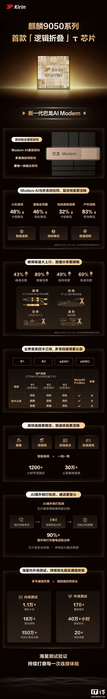
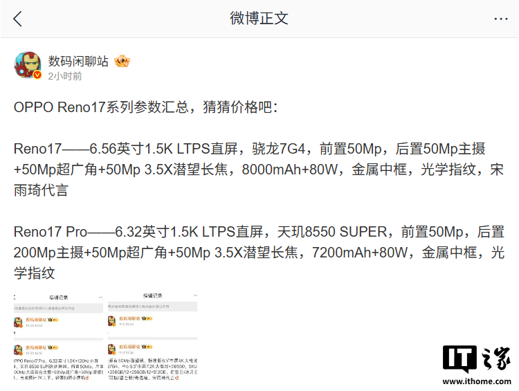
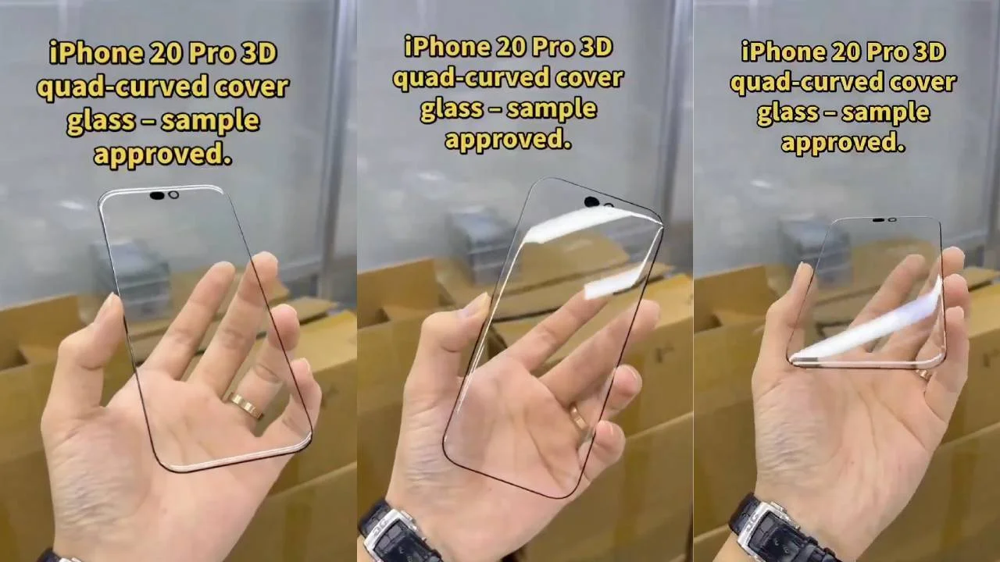
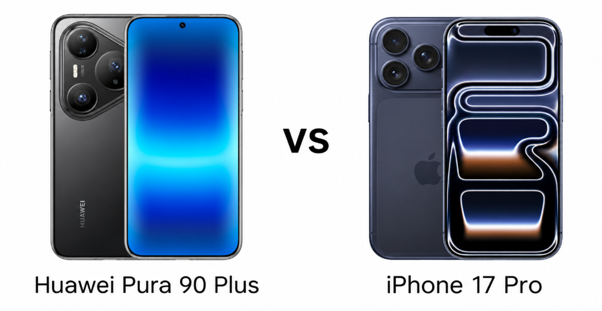
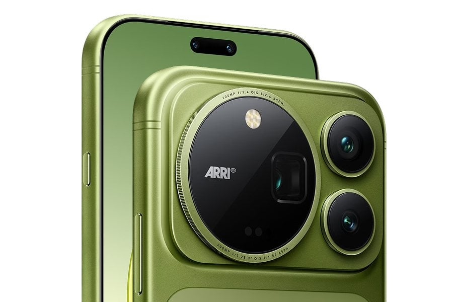
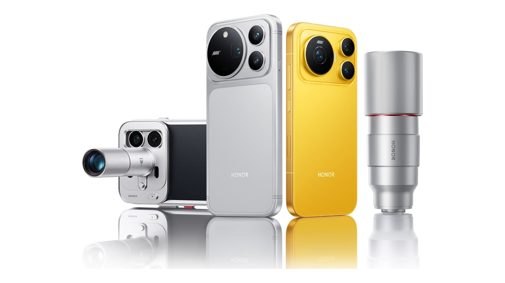
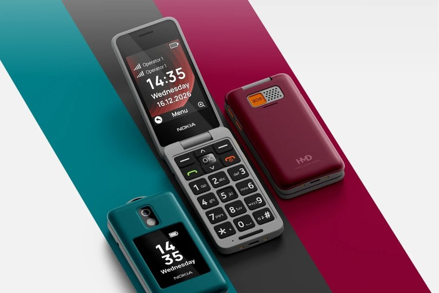

뉴스
기술의 변화, 매일 한눈에.
카메라 · 스마트폰 · AI, 해외 테크 소식을 모아 전합니다.
최근 발행2026-11-16
새로 들어온 소식


최신 뉴스
전체 4,383개 기사
한국 세무사 시험 수석 합격생, 초소형 카메라와 AI로 부정행위 인정하며 자수

Huawei Mate X 시리즈 폴더블 디스플레이 8주년, 위청둥(Yu Chengdong) Mate X8 신제품 출시 공식 발표

Huawei Mate X8 폴더블 스마트폰 오늘 공개, 컬렉션 에디션은 XRING Z10 모듈 카메라 지원 예정

Huawei Mate X8 폴더블 디스플레이 스마트폰 외관 공개, 위청둥(Yu Chengdong) 스크린, 카메라, 성능의 새로운 돌파구 발표

일상의 이야기를 파리 그랑 팔레로 옮기다, Huawei 이미지 공모전 10년

Galaxy S27 Ultra와 S27 Pro, 동일한 카메라 레이아웃 공유 예정: 디자인 공개

Apple iPhone 20 Pro 디스플레이 커버 유출: 3D 쿼드 커브드 디자인, 홀 크기 축소

Samsung One UI 9.5 시스템, 대부분의 기본 앱에 AI 기능 도입 예정
오픈판구(openPangu)-2.1-Pro, Huawei 클라우드 출시: 에이전트 개발, AI 코딩, 추론 최적화 기능 업그레이드

Huawei 기린 9050 시리즈 칩셋의 차세대 발롱 AI 모뎀 정보 공개: 융합 통신 아키텍처 최초 적용, 업계 최초 쿼드 카드 트리플 스탠바이

Apple 스마트 홈 허브 HomeView 첫 평가 공개: Siri AI 문제 빈번, 개인 정보 보호 문제 우려

포익틀랜더 녹턴 35mm F1.2 풀프레임 렌즈 출시, Sony E, Nikon Z 마운트 제공

OPPO Reno17 시리즈 사양 유출: 2억 화소 메인 카메라, 11월 16일 공개

OPPO, Reno17 시리즈 스마트폰 뤄톈이(洛天依) 콜라보 커스텀 테마 공개, 11월 16일 출시

iPhone 20 Pro의 3D 쿼드 커브드 커버 글라스 핸즈온 영상 유출

화웨이 Pura 90 Plus vs 아이폰 17 Pro: 하드웨어는 화웨이의 승리, 하지만 여전히 애플이 더 나은가?

Huawei 기린 9050 시리즈의 새로운 마량 GPU, AI ISP 정보 공개: 2세대 하드웨어 광선 추적, 최초 2억 화소 융합 촬영 구현

Honor Magic 10, 2억 화소 LOFIC 카메라 및 탠덤 OLED 디스플레이 탑재 전망

Honor, 200MP OVB0D 포함한 4가지 OmniVision 카메라 센서 테스트 중

HMD 2320 Flip 4G 유출, GPS 및 SOS 기능 갖춘 기본 플립 스마트폰 공개
구글 임원, Gemini AI로 Apple iPhone Duo에서 Microsoft Win11 구동 성공
검색 결과가 없습니다
다른 검색어를 입력하거나 필터를 초기화해 보세요.